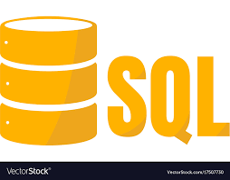

Structured Query Language (SQL) was developed in the early 1970’s by Raymond Boyce and Donald Chamberlin at IBM.
This programming language is primarily used for database work such as those needed by companies with a large
information network. A few companies that use SQL include Kaiser, Dell, Yahoo, and Microsoft.
CodingSight.com
CodingSight.com
